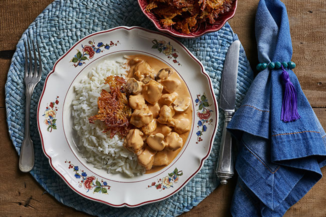

Strogonoff
 fácil serve 4 pessoasIngredientes
- 1 peito de frango sem pele nem osso (cerca de 700 g)
- 200 g de cogumelos-de-paris
- 1 cebola
- 2 dentes de alho
- 1 ½ colher (sopa) de extrato de tomate
- 1 ½ colher (sopa) de ketchup caseiro
- 1 ½ colher (sopa) de molho inglês
- 1 ½ colher (sopa) de conhaque
- 1 ½ xícara (chá) de creme de leite fresco
Modo de Preparo
Corte o peito de frango em cubos de 2,5 cm, transfira para uma tigela e mantenha em temperatura ambiente enquanto prepara o restante dos ingredientes – se o frango estiver gelado na hora de ir para a panela, vai cozinhar em vez de dourar.
Corte os cogumelos-de-paris em 3 fatias (os menores corte apenas ao meio). Descasque e pique fino a cebola e os dentes de alho.
Leve ao fogo médio uma panela média. Quando aquecer, regue com 1 colher (sopa) de azeite doure os cubos de frango em etapas, sem amontoar – para que fiquem dourados. Tempere com sal e vire com a pinça para dourar os cubos por igual. Transfira para uma tigela e repita com o restante, regando a panela com azeite a cada leva.
Abaixe o fogo da panela e regue com mais 1 colher (sopa) de azeite. Adicione a cebola, tempere com uma pitada de sal e refogue até murchar, por 3 minutos – aproveite para ir raspando o fundo da panela, dissolvendo os queimadinhos que são essenciais para dar sabor ao preparo. Junte o alho e mexa por 1 minuto para perfumar.
Acrescente o extrato de tomate, o ketchup e mexa bem. Volte o frango dourado para a panela, junte o conhaque e mexa para evaporar o álcool. Junte o molho inglês, o creme de leite e misture bem. Tempere com sal e pimenta e deixe cozinhar em fogo médio por cerca de 10 minutos, mexendo de vez em quando, até engrossar.
Acrescente os cogumelos e deixe cozinhar por mais 2 minutos até ficarem levemente macios. Sirva a seguir, com arroz e batata-palha.